Playwright + Python
Agents + RAG + CI/CD

Intelligent QA systems
Automation architecture, AI-assisted validation, and release confidence in one workflow.
Automation architecture, AI-assisted validation, and release confidence in one workflow.
Formal validation across agile delivery, RPA, and intelligent test automation.
Agile delivery, ceremonies, and team facilitation.
RPA development with Robot Framework and Robocorp tools.
ACCELQ codeless automation design and best practices.
A snapshot of programs where automation had to be scalable, observable, and aligned with business risk.
Enterprise workflow validation and release confidence for a complex tax transformation program.
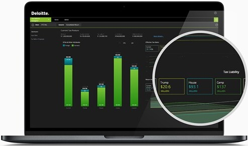
Automation support for analysis-heavy workflows where speed and reliability both mattered.
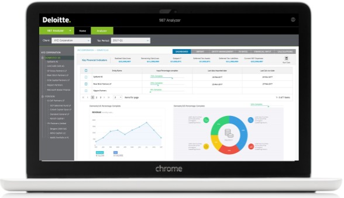
Quality engineering for commerce and inventory-heavy experiences with production-grade automation coverage.
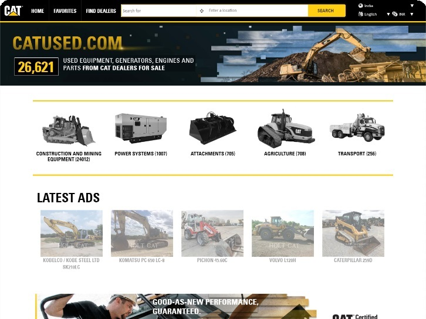
Scalable quality architecture for a global enterprise workspace with multi-team delivery dependencies.
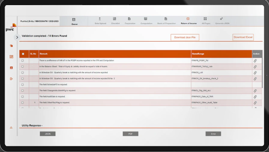
From foundational test strategy to agentic validation loops, I help teams create quality systems that scale with product complexity.
Exploratory, regression, and risk-based validation for stable releases.
Cross-device test coverage for Android and iOS user journeys.
Scalable UI, API, and workflow automation with maintainable frameworks.
Load, stress, and resilience testing for critical user and system flows.
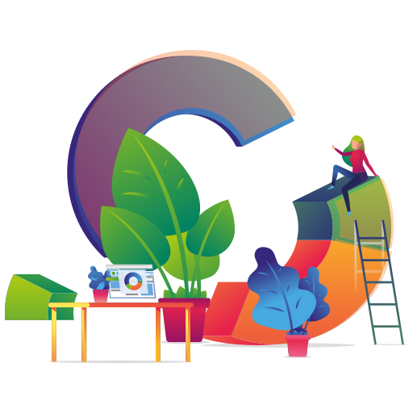
Test reporting, defect trends, and quality signals that support decisions.
CI/CD integration, pipeline gates, and automated quality enforcement.
Runtime validation, environment checks, and production-aware monitoring.
Framework upkeep, debugging support, and ongoing automation guidance.
Practical work around testing, automation, and AI implementation patterns.
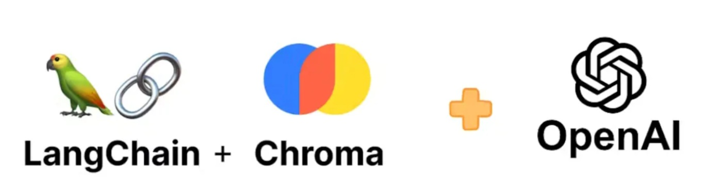
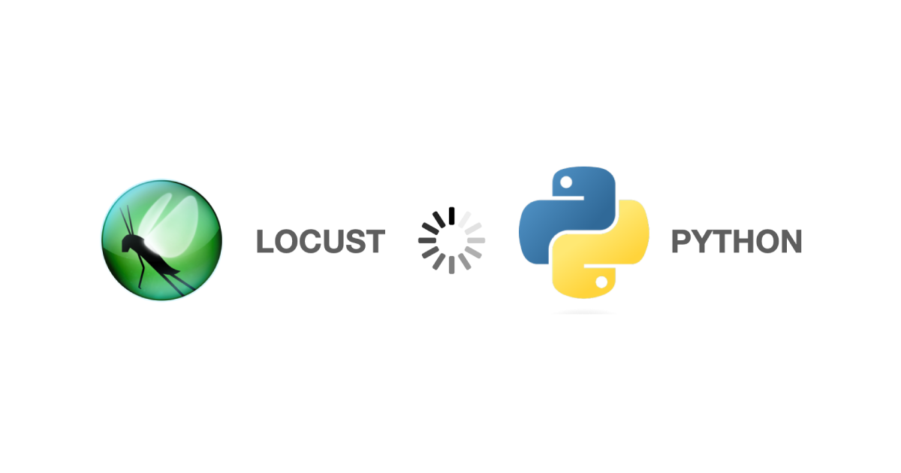
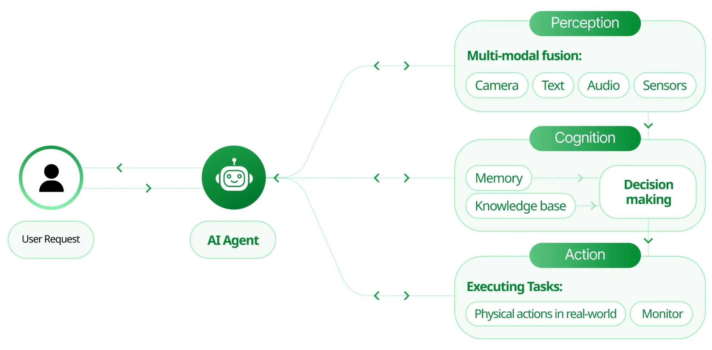
Using LLMs to accelerate test authoring.
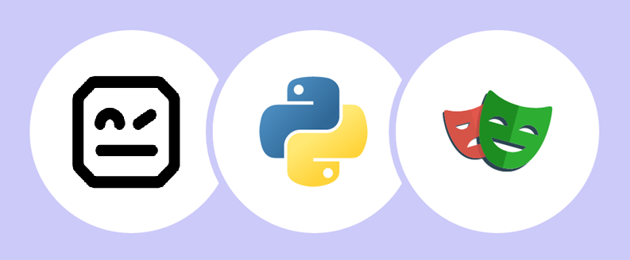
Browser automation coverage using Robot Framework with Playwright-based execution.
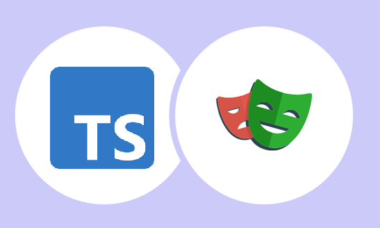
End-to-end test automation patterns built with TypeScript and Playwright.
Organized by what I build with, what I validate against, and which AI capabilities I apply inside modern quality workflows.
Daily engineering tools used to design, automate, and ship robust quality systems.
Application stacks, frameworks, and enterprise ecosystems validated across projects.
Applied AI capabilities for smarter test generation, validation, triage, and autonomous workflow design.
The stack combines engineering discipline, tooling depth, and practical AI experimentation.
From foundational software testing to agentic workflow validation, the matrix below reflects both execution depth and platform breadth.
I work where reliability, speed, and automation maturity matter: web platforms, enterprise products, data workflows, and AI-enabled systems.
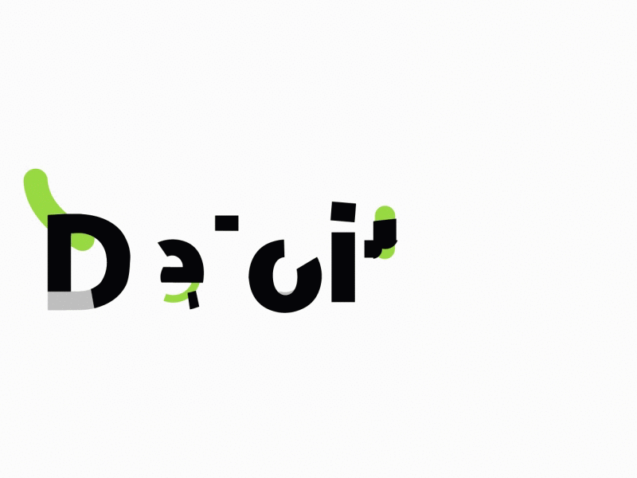
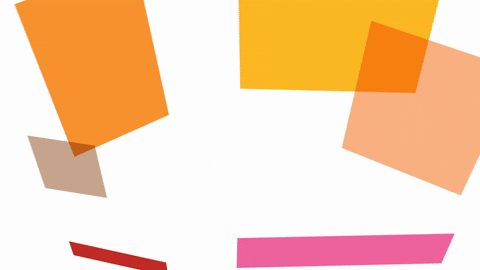
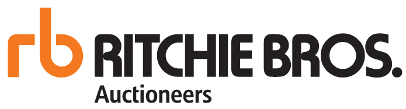
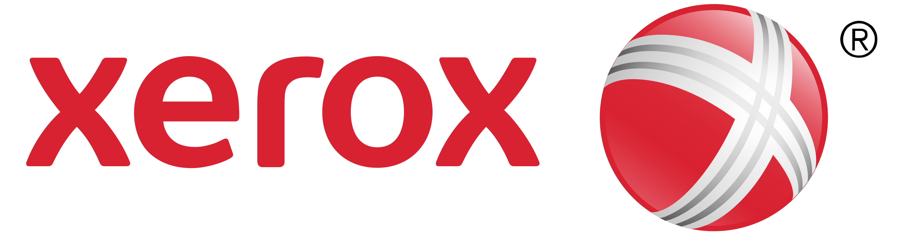
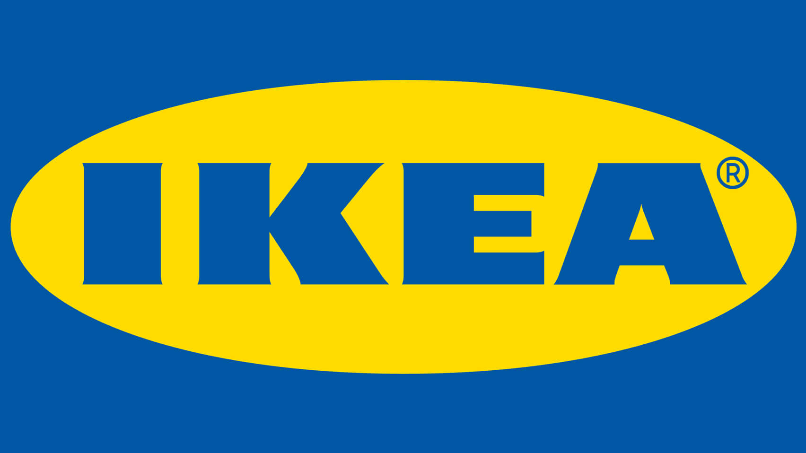
Feedback from clients and collaborators who have seen the work at delivery level.